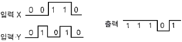
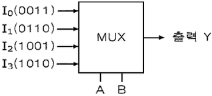
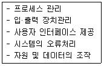
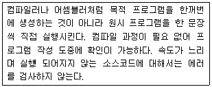
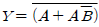
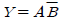
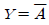
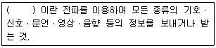

무선설비산업기사 (2017-05-07 기출문제)
1과목: 디지털 전자회로
1. 다음 중 콘덴서 입력형 평활회로의 특징에 대한 설명으로 틀린 것은?
- 용량 C가 클수록 정류기(다이오드)에 흐르는 전류의 크기는 감소한다.
- 용량 C가 클수록 정류기(다이오드)에 흐르는 전류의 시간이 짧아진다.
- 정류기(다이오드)에 흐르는 전류는 펄스 파형이다.
- 용량 C가 클수록 출력전압의 맥동률은 작아진다.
(정답률: 64%)

2. 전압 안정계수가 0.1인 정전압회로의 입력전압이 5[V] 변화할 때 출력전압의 변화는?
- 0.01[mV]
- 1.2[mV]
- 0.2[mV]
- 0.5mV]
(정답률: 85%)
3. 다음 중 트랜지스터 증폭회로에서 부궤환을 걸었을 때 일어나는 현상이 아닌 것은?
- 안정도가 좋아진다.
- 비직선 일그러짐이 적어진다.
- 주파수 특성이 개선된다.
- 대역폭이 감소한다.
(정답률: 75%)
4. 전압궤환증폭기에서 무궤환시 이득이 A, 궤환율이 β일 때 궤환시 전압이득은 Af=A/(1-βA)이다. β..A=1인 경우 어떠한 회로로 동작한 것인가?
- 부궤환 회로이다.
- 파형정형 회로이다.
- 발진회로이다.
- 궤환회로도 아니고 발진회로도 아니다.
(정답률: 78%)
5. 전압이득이 50인 저주파 증폭기가 약 10[%] 정도의 왜율을 가지고 있다. 이를 2[%] 정도로 개선하기 위하여 걸어주어야 하는 부궤환율 β는 얼마인가?
- 10
- 4
- 0.1
- 0.08
(정답률: 73%)
6. 다음 중 푸시풀(Push-Pull) 증폭기에 대한 설명으로 틀린 것은?
- 우수 고조파가 상쇄된다.
- 비직선 일그러짐이 적다.
- A급 증폭기에서만 사용된다.
- 입력신호가 없을 때 전력손실이 매우 적다.
(정답률: 82%)
7. 다음 중 발진회로의 주파수 변동원인에 해당되지 않는 것은?
- 전원전압의 변동
- 온도변화
- 부하변동
- 기생진동
(정답률: 76%)
8. 다음 중 비정현파 신호가 출력되는 발진기는?
- 멀티바이브레이터
- 빈(Wien) 브릿지형 발진기
- 콜피츠 발진기
- 수정 발진기
(정답률: 75%)
9. 변조도가 50[%]인 진폭변조 송신기에서 반송파의 평균 전력이 400[mW]일 때, 피변조파의 평균전력은?
- 400[mW]
- 450[mW]
- 500[mW]
- 549[mW]
(정답률: 77%)
10. 900[kHz]의 반송파를 5[kHz]의 신호주파수로 진폭 변조한 경우 피변조파에 나타나는 주파수 성분이 아닌 것은?
- 895[kHz]
- 900[kHz]
- 9⑤[kHz]
- 910[kHz]
(정답률: 88%)
11. 다음 중 음성 신호의 송신측 PCM(Pulse Code Modulation) 과정이 아닌 것은?
- 표본화
- 부호화
- 양자화
- 복호화
(정답률: 89%)
12. FM 변조 방식을 사용하는 경우 아날로그 정보 신호의 기본 주파수를 2[kHz], 최대 주파수 편이가 125[kHz]인 경우 Carson 법칙을 적응할 때 전송에 필요한 대역폭은?
- 127[kHz]
- 254[kHz]
- 312[kHz]
- 428[kHz]
(정답률: 70%)
13. 펄스가 최대진폭의 10[%]에서 90[%]까지 상승하는 시간은?
- 지연시간
- 선형시간
- 축적시간
- 상승시간
(정답률: 89%)
14. 다음 중 멀티바이브레이터의 단안정회로와 쌍안정회로는 어떻게 결정 되는가?
- 결합회로의 구성에 따라 결정된다.
- 출력 전압의 부궤환율에 따라 결정된다.
- 입력 전류의 크기에 따라 결정된다.
- 바이어스 전압 크기에 따라 결정된다.
(정답률: 85%)
15. 10진수 8을 3초과 코드(Excess-3 code)로 맞게 변환한 값은?
- 1000
- 1001
- 1011
- 1111
(정답률: 82%)
16. 다음 그림의 X, Y 입력에 대한 동작파형의 논리 게이트는 무엇인가?

- NAND 게이트
- AND 게이트
- OR 게이트
- NOT 게이트
(정답률: 83%)
17. JK플립플롭에서 입력 J=0, K=1 이고, 클록 펄스가 인가되면 +1(입력 후의 값)의 출력상태는?
- 0
- 1
- 반전
- 부정
(정답률: 75%)
18. 다음과 같은 멀티플렉서 회로에서 제어입력 A와 B가 각각 1일 때 출력 Y의 값은?

- 0011
- 0110
- 1001
- 1010
(정답률: 78%)
19. 다음 중 M×N 디코더(Decoder)에 대한 설명으로 틀린 것은?
- AND 회로의 집합으로 구성할 수 있다.
- 2진수를 10진수로 변환하는 회로이다.
- 10진수를 BCD(Binary Coded Decimal)로 표현할 때 사용한다.
- 명령 해독이나 번지를 해독할 때 사용한다.
(정답률: 77%)
20. 디지털 IC의 정상 동작에 영향을 주지 않고 게이트 출력부에 연결할 수 있는 표준 부하의 숫자를 무엇이라고 하는가?
- 팬 아웃
- 틸트
- 잡음 허용치
- 전달 지연 시간
(정답률: 84%)
2과목: 무선통신 기기
21. 중간주파수가 500[kHz]인 슈퍼헤테로다인 수신기에서 희망파 1,000[kHz]에 대한 영상주파수는 얼마인가? (단, 상측 헤테로다인 방식으로 동작한다.)
- 1,500[kHz]
- 2,000[kHz]
- 2,200[kHz]
- 3,200[kHz]
(정답률: 83%)
22. 다음 중 AM송신기의 기본 구성부가 아닌 것은?
- 완충 증폭부
- 체배 증폭부
- 중간주파 증폭부
- 전력 증폭부
(정답률: 64%)
23. 다음 중 이득 대역적(Gain Bandwidth Product)이 갖는 의미로 옳은 것은?
- 증폭기의 증폭 성능을 나타내며 얼마나 넓은 주파수 범위에 걸쳐 일정한 이득으로 증폭 할 수 있는가를 의미
- 증폭기의 증폭 성능을 나타내며 다음 단과 어느 정도 양호한 이득이 이루어지는가를 의미
- 발진기의 발진 성능을 나타내며 어느 정도 넓은 대역에 걸쳐 안정된 발진이 가능한가를 의미
- 발진기의 발진 성능을 나타내며 어느 정도 양호한 이득으로 발진을 수행하는가를 의미
(정답률: 72%)
24. PSK(Phase Shift Keying) 통신 방식의 한 종류인 QPSK(Quadrature Phase Shift Keying)는 몇 진 PSK와 같은가?
- 2진
- 4진
- 8진
- 16진
(정답률: 76%)
25. 레이다의 송신펄스폭 시간이 0.2[㎲]일 때 최소탐지거리는?
- 15[m]
- 30[m]
- 60[m]
- 120[m]
(정답률: 62%)
26. 위성 통신에서 전자 빔과 진행파 전계와의 상호 작용에 의해 마이크로파전력을 증폭하는 기능을 하는 것은 무엇인가?
- 진행파관(TWT)
- 클라이스톤(Klystron)
- 자전관(Magnetron)
- 반사기
(정답률: 81%)
27. 우리나라 고정위성통신용 Ku밴드의 주파수대역은?
- 8~12[GHz]
- 12~18[GHz]
- 18~27[GHz]
- 27~40[GHz]
(정답률: 83%)
28. 다음 중 위성 통신의 회선 할당 방식이 아닌 것은?
- PAMA(Pre Assigned Multiple Access)
- DAMA(Demand Assigned Multiple Access)
- SDMA(Spatial Division Multiple Access)
- RAMA(Random Assigned Multiple Access)
(정답률: 67%)
29. 다음 중 셀룰러(Cellular) 이동통신 시스템의 장점이 아닌 것은?
- 많은 가입자를 수용할 수 있다.
- 저출력 소기지국화로 통화 비용이 줄어든다.
- 핸드오프(Hand Off)의 횟수가 감소한다.
- 서비스 지역의 확장이 용이하다.
(정답률: 82%)
30. 다음 중 이동통신용 무선 송수신기의 운용관리 조건으로 틀린 것은?
- 송신되는 발사 주파수의 안정도를 높게 유지한다.
- 점유주파수 대역을 가능한 좁게 유지하여야 한다.
- 송신출력은 스퓨리어스(Spurious)파 방사가 최대가 되도록 설정하여야 한다.
- 송·수신 신호의 일그러짐과 내부 잡음이 적어야 한다.
(정답률: 69%)
31. 다음 중 영상방송용 송·수신 중계시스템의 전송방식이 아닌 것은?
- 마이크로웨이브 전송방식
- SSB-SC(Single Side Band Suppressed Carrier) 전송방식
- SNG(Satellite News Gathering) 전송방식
- 광케이블 전송방식
(정답률: 77%)
32. 다음 중 축전지의 부동충전방식에 대한 설명으로 틀린 것은?
- 축전지의 충방전 전기량이 적어 수명이 짧아진다.
- 이동용 무선기기의 전원설비에 이용된다.
- 축전지의 용량이 비교적 적어도 된다.
- 부하 변동으로 인한 전압 변동에 대하여 안정적이다.
(정답률: 81%)
33. 전원설비의 전력변환장치 중 인버터(inverter)에 대한 설명으로 옳은 것은?
- 직류전원을 다른 크기의 직류전원으로 변환하는 장치
- 직류전압을 일정한 주파수의 교류전압으로 변환하는 장치
- 교류전압을 직류전압으로 변환하는 장치
- 교류전압을 다른 주파수와 크기를 갖는 교류전압으로 변환하는 장치
(정답률: 84%)
34. 전원회로에서 부하가 있을 때 단자전압이 110[V], 부하가 없을 때 단자전압이 120[V]라면 이 때의 전압 변동률은 약 얼마인가?
- 10.1[%]
- 9.1[%]
- 8.1[%]
- 7.1[%]
(정답률: 77%)
35. 다음 중 접지안테나의 실효 저항 측정 방법이 아닌 것은?
- 치환법
- 저항삽입법
- Q미터법
- 실효리액턴스법
(정답률: 74%)
36. 2신호법에 의한 수신기의 선택도 측정 중 근접 방해파에 의해 수신기의 비직선 동작으로 인한 선택 희망 신호의 출력 변화 현상은?
- 혼변조 특성
- 감도 억압 효과
- 상호 변조 특성
- 인입현상
(정답률: 58%)
37. 고니오미터(Goniometer) 는 무엇을 측정할 때 사용하는가?
- 방송출력
- 상호인덕턴스
- 전파의 도래각
- 대지의 정전용량
(정답률: 84%)
38. 측정된 전계강도가 60[dB]이고, 안테나 실효길이가 2[m]인 경우 안테나에 발생하는 기전력은 몇 [㎶]인가?
- 100[㎶]
- 1,000[㎶]
- 2,000[㎶]
- 4,000[㎶]
(정답률: 61%)
39. 다음 중 정류 장치의 특성 해석에 이용되는 파라미터로서 입력교류전력에 대한 출력직류전력의 비로 나타내어지는 것은 무엇인가?
- 맥동률
- 한계변환율
- 정류효율
- 최대역전압
(정답률: 79%)
40. 코올라우시 브리지를 사용하여 전해액의 저항이나 접지저항을 측정할 때 직류 전원 대신 교류 전원을 사용한다. 전원을 직류로 사용하지 않는 이유로 가장 적합한 것은?
- 전극 내부 저항이 감소하기 때문에
- 전극 표면에서 정전기 발생을 막기 위해서
- 전극 표면의 발열을 방지하기 위해서
- 전극 표면의 분극작용을 방지하기 위해서
(정답률: 83%)
3과목: 안테나 개론
41. 주파수 150[kHz]의 무선통신에서 정전계, 유도 전자계,복사 전자계가 같아지는 거리는 안테나로부터 약 얼마의 거리인가?
- 320[m]
- 500[m]
- 680[m]
- 770[m]
(정답률: 74%)
42. 다음 중 전파의 성질에 대한 설명으로 옳은 것은?
- 균일 매질을 전파(傳播)하는 전파(電波)는 회절한다.
- 정파는 종파이다.
- 주파수에 상관없이 회절만 한다.
- 주파수가 높을수록 직진하며 낮을수록 회절한다.
(정답률: 82%)
43. 무선통신에서 전파의 전파통로에 의한 분류 중 유형이 다른 것은?
- 직접파
- 지표파
- 회절파
- 전리층파
(정답률: 77%)
44. λ/4 변환방식 중 단일 λ/4부를 통해 얻을 수 있는 대역폭보다 큰 대역폭을 필요로 하는 경우에 응용되는 방식은?
- 테이퍼
- 다단 변환기
- 집중 정수 회로
- 스터브
(정답률: 71%)
45. 다음 중 급전선의 전송 원리가 전자류에 의한 전송으로서 내부 도체와 외부 도체를 사용하는 방식의 급전선은?
- 동축케이블
- 도파관
- 평행2선식 급전선
- 동나선
(정답률: 72%)
46. 다음 도파관의 여진 방법 중 자계에 의한 여진 방법은?
- 테이퍼 변성기에 의한 여진
- 정전적 결합에 의한 여진
- 전자 결합에 의한 여진
- 작은 루프 안테나에 의한 여진
(정답률: 82%)
47. 차단파장이 10[cm]인 구형 도파관에 6[GHz]의 신호를 전송하려할 때 관내파장은 약 얼마인가?
- 1.4[cm]
- 2.9[cm]
- 5.8[cm]
- 20[cm]
(정답률: 57%)
48. 도파관의 임피던스 정합에 쓰이는 소자로 입사파는 감쇠없이 진행 하지만 반사파는 큰 감쇠로 인하여 전력 흡수되는 비가역 회로 소자를 무엇이라 하는가?
- 아이솔레이터(Isolator)
- 공동공진기(Cavity Resonator)
- 방향성결합기
- 서쿨레이터(Circulator)
(정답률: 83%)
49. 다음 중 λ/4수직 접지 안테나에 대한 설명으로 틀린 것은?
- 안테나의 실효고 he=λ/2π이다.
- 장·중파대 안테나의 기본형이다.
- 수평면내 지향성은 무지향성이다.
- 고유파장은 선길이의 1/4배이다.
(정답률: 59%)
50. 150[Ω]의 저항, 0.4[㎌]의 커패시터 그리고 값을 모르는 인덕터가 직렬로 연결되어 있는 회로가 356[Hz]에서 공진할 경우 인덕터의 값은 약 얼마인가?
- 0.5[H]
- 1.5[H]
- 2.5[H]
- 3.5[H]
(정답률: 41%)
51. 안테나 특성 중 방사전력 밀도가 최대 방사전력의 1/2로 감쇠되는 두 지점 사이의 각도로 지향특성의 첨예도를 나타내는 것은?
- 전후방비
- 주엽
- 부엽
- 반치각(HPBW)
(정답률: 77%)
52. 다음 중 슈퍼턴스타일 안테나를 수직으로 적립(Stack)하여 사용하는 이유로 옳은 것은?
- Q를 높이기 위하여
- 이득을 높이기 위하여
- 광대역화를 위하여
- 전압급전을 위하여
(정답률: 58%)
53. 다음 중 Collinear-Array 안테나의 설명으로 틀린 것은?
- 소자수가 많아질수록 이득이 커진다.
- 수직면내 지향성이 예민하여 고이득 안테나로서 사용된다.
- 각 소자는 90[°] 위상차를 갖고 크기가 같은 신호로 급전한다.
- VHF(Very High Frequency)대 이동무선 기지국용 및 중계국용으로 널리 이용된다.
(정답률: 64%)
54. 다음 중 접지저항이 1~2[Ω]이고, 대전력 방송국의 안테나 접지에 사용하는 방식은?
- 다중 접지
- 심굴 접지
- 방사상 접지
- 카운터포이즈
(정답률: 69%)
55. 다음 중 장파, 중파대에서 지표파에 의해 전파되는 전파의 감쇠가 가장 적은 매질은?
- 해수
- 사막
- 습지
- 건지
(정답률: 89%)
56. 다음 중 발생원인에 따른 라디오 덕트(Radio Duct)가 아닌 것은?
- 주간 냉각에 의한 라디오 덕트
- 전선에 의한 라디오 덕트
- 이류에 의한 라디오 덕트
- 침강에 의한 라디오 덕트
(정답률: 81%)
57. 다음 중 전리층에 대한 설명으로 틀린 것은?
- 자외선이 강할수록 전리 현상이 크게 일어난다.
- 전리층의 전자밀도는 높이에 따라 일정하지 않다.
- 공기분자가 적을수록 전리현상이 크게 일어난다.
- 태양 에너지가 강한 주간에는 F층이 F1, F2층으로 구분된다.
(정답률: 70%)
58. 다음 중 전리층의 임계 주파수에 대한 설명으로 틀린 것은?
- 전리층의 굴절률 n=∞일 때의 주파수
- 전리층을 반사하는 주파수 중 가장 높은 주파수
- 전리층을 통과하는 주파수 중 가장 낮은 주파수
- 전리층에서 수직 입사파의 반사와 투과의 경계 주파수
(정답률: 78%)
59. 산란파에 의한 것으로써 주로 송신소 부극에서 일어나며, 주전파는 지표파인 에코(Echo)는?
- 역회전 에코
- 근거리 에코
- 장시간 지역 에코
- 지자극 에코
(정답률: 77%)
60. 다음 중 장거리통신에서 장파와 비교한 단파의 특징에 대한 설명으로 틀린 것은?
- 페이딩이 발생하기 쉽다.
- 공전의 영향을 받기 쉽다.
- 안테나를 소형으로 사용하기 용이하다.
- 주로 F층 반사파를 이용한다.
(정답률: 50%)
4과목: 전자계산기 일반 및 무선설비기준
61. 다음 중 EEPROM(Electrically Erasable Programmable Read Only Memory)과 정적메모리(SRAM)의 2가지 결합특성을 가지고 있는 것은?
- NVRAM(Non-Volatile Random Access Memory)
- EPLD(Electrically Programmable Logic Device)
- DRAM(Dynamic Random Access Memory)
- OTP(One Time Programmable)
(정답률: 72%)
62. 다음 중 입·출력 겸용장치에 해당하지 않는 것은?
- 자기디스크
- 콘솔(Console)
- OCR(Optical Character Reader)
- 자기테이프
(정답률: 74%)
63. 16진수 3B7F를 2진수로 바르게 변환된 것은?
- 0011 1000 1110 1111
- 1111 1011 0111 0011
- 1111 0111 1011 0011
- 0011 1011 0111 1111
(정답률: 76%)
64. 다음 중 오류 검출용 코드에 해당하는 코드는?
- BCD코드
- Execess-3 코드
- 해밍 코드
- Gray 코드
(정답률: 84%)
65. 다음 보기와 같은 기능을 수행하는 것은?

- 하드웨어
- 운영체제
- 응용프로그램
- 미들웨어
(정답률: 87%)
66. 다음 운영체제의 프로세스 관리기능 중 교착상태의 발생 조건에 대한 설명으로 옳은 것은?
- 상호배제 : 한 개의 프로세스만이 공유자원을 사용할 수 있어야 한다.
- 점유와 대기 : 공유자원과 자원을 사용하기 위해 대기하고 있는 프로세스들이 원형으로 구성되어, 자신의 할당자원 외에 앞이나 뒤에 프로세스의 자원을 요구해야 한다.
- 비 선점 : 하나의 자원을 점유하였으면 다른 프로세스에 할당되어 사용되고 있는 자원을 추가적으로 점유하기 위해 대기하는 프로세스가 있어야 한다.
- 환형대기 :다른 프로세스에 할당된 자원은 사용이 끝날 때 까지 강제로 빼앗을 수 없어야 한다.
(정답률: 58%)
67. 다음 중 C 언어의 변수에 대한 설명으로 틀린 것은?
- qustnsms 값을 저장하는 기억장소의 주소, 길이, 타입의 세 가지 속성을 지닌다.
- 변수 이름은 영어 알파벳 문자나 밑줄 문자(_)로 시작해야 한다.
- 변수 이름의 영문 대문자와 소문자는 서로 구별되지 않는다.
- C 언어의 키워드는 변수 이름으로 사용될 수 없다.
(정답률: 86%)
68. 다음은 어떤 프로그래밍 변역기에 대한 설명인가?

- Translator
- Linking Loader
- Generator
- Interpreter
(정답률: 74%)
69. 다음 중 마이크로프로세서가 수행하기 위한 명령어와 데이터는 어디에 존재해야 하는가?
- 메인 메모리
- CD-ROM
- HDD
- Floppy Disk
(정답률: 76%)
70. 논리식

를 간략화하면?

- Y=1
- Y=AB
(정답률: 78%)
71. 전파법에서 정의한 '주파수할당'을 옳게 설명한 것은?
- 특정한 주파수를 이용할 수 있는 권리를 특정인에게 주는 것을 말한다.
- 무선국을 허가함에 있어 당해 무선국이 이용할 특정한 주파수를 지정하는 것을 말한다.
- 무선국을 운용할 때 불요파 발사를 억제하기 위한 주파수를 지정하는 것을 말한다.
- 설치된 무선설비가 반응할 수 있도록 필요한 주파수를 지정하는 것을 말한다.
(정답률: 82%)
72. 다음 괄호 안에 들어갈 내용으로 옳은 것은?

- 정보통신
- 무선통신
- 전파통신
- 전기통신
(정답률: 84%)
73. 미래창조과학부장관은 주파수의 이응실적이 낮은 경우 주파수 회수 또는 주파수 재배치를 할 수 있다. 다음 중 주파수의 이용실적의 판단기준으로 해당이 없는 것은?
- 해당 주파수의 이용 현황 및 수요 전망
- 전파이용기술의 발전 추세
- 국제적인 주파수의 사용동향
- 주파수의 양도와 임대 실태
(정답률: 63%)
74. 다음 중 미래창조과학부장관의 전파감시 업무사항이 아닌 것은?(관련규정 개정전 문제로 기존 정압은 3번입니다. 여기서는 3번을 누르면 정답처리 됩니다. 자세한 내용은 해설을 참고하세요.)
- 무선국에서 사용하고 있는 주파수의 편차·대역폭(帶域幅) 등 전파의 품질 측정
- 무선기기의 적합등록 또는 적합성평가를 위한 시험측정
- 허가 받지 아니한 무선국에서 발사한 전파의 탐지
- 통신방법 준수여부
(정답률: 78%)
75. 무선설비 공사가 품질확보 상 미흡 또는 중대한 위해를 발생시킬 수 있다고 판단될 때 공사중지를 지시할 수 있으며, 공사중지에는 부분중지와 전면중지로 구분된다. 다음 중 부분중지에 해당되는 경우는?
- 재시공 지시가 이행되지 않는 상태에서는 다음 단계의공정이 진행됨으로써 하자발생이 될 수 있다고 판단될 경우
- 시공자가 고의로 정보통신시설 설비 및 구축공사의 추진을 심히 지연시킬 경우
- 정보통신공사의 부실 발생우려가 농후한 상황에서 적절히 조치를 취하지 않은 채 공사를 계속 진행할 경우
- 천재지변 등 불가항력적인 사태가 발생하여 공사를 계속할 수 없다고 판단된 경우
(정답률: 83%)
76. 다음 중 방송통신재난관리 기본계획에서 방송통신재난에 대비하기위해 필요한 사항을 규정한 것으로 가장 부적합한 것은?
- 피해복구 물자의 확보
- 우회 방송통신 경로의 확보
- 정부 재산·보호를 위한 신속한 재난방송 실시
- 방송통신설비의 연계 운용을 위한 정보체계의 구성
(정답률: 66%)
77. 다음 중 무선설비 기성부분검사와 준공검사에 대한 설명으로 틀린 것은?
- 송사현장에 주요공사가 완료되고 현장이 정리단계에 있을 때에는 준공 2개월 전에 준공 기한 내 준공 가능여부 및 미진사항의 사전보완을 위해 예비 준공검사를 실시하여야 한다.
- 감리사는 시공자로부터 시험운영계획서를 제출받아 검토·확정하여 시험운용 20일 전까지 발주자 및 시공자에게 통보하여야 한다.
- 감리업자 대표자는 기성부분검사원 또는 준공계를 접수하였을 때는 30일 안에 소속 감리사 중 특급감리사급 이상의 자를 검사자로 임명하고, 이 사실을 즉시 본인과 발주자에게 통보하여야 한다.
- 예비준공검사는 감리사가 확인한 정산설계도서 등에 의거 검사하여야 하며, 그 검사 내용은 준공검사에 준하여 철저히 시행하여야 한다.
(정답률: 79%)
78. 다음 중 적합성평가를 받아야 하는 선박국용 양방향 무선전화장치의 전파형식 기호로 맞는 것은?
- F3E 및 G3E
- R3E 및 J3E
- A3E 및 R3E
- G3E 및 A3E
(정답률: 66%)
79. 다음 중 전기통신역무를 제공하는 무선국 송신설비의 안테나 공급전력허용편차로 맞는 것은?
- 상한 50[%], 하한 20[%]
- 상한 10[%], 하한 20[%]
- 상한 20[%], 하한 없음
- 상한 20[%], 하한 5[%]
(정답률: 63%)
80. 중파무선방위측정기는 전원접속 후 몇 분 이내에 동작할 수 있어야 하는가?
- 1분
- 2분
- 3분
- 4분
(정답률: 84%)
용량 C가 클수록 정류기(다이오드)에 흐르는 전류의 크기는 감소합니다. 이는 콘덴서가 충전되는 시간이 더 오래 걸리기 때문입니다. 따라서 콘덴서 입력형 평활회로에서는 용량 C가 클수록 출력전압의 맥동률은 작아지게 됩니다. 또한, 용량 C가 클수록 정류기(다이오드)에 흐르는 전류의 시간이 짧아지기 때문에 출력전압의 안정성이 향상됩니다.